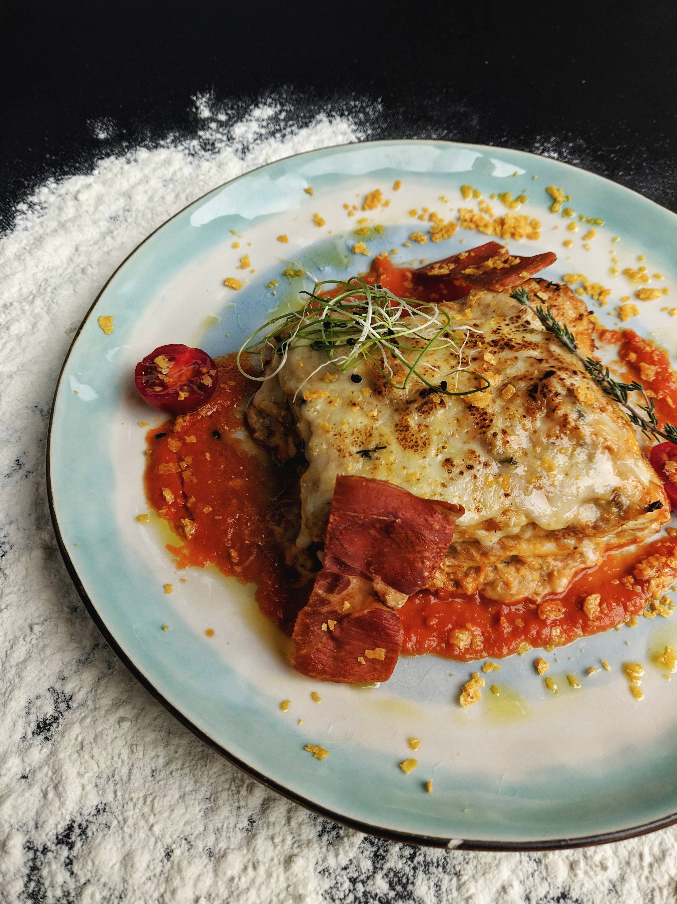

Lasagna
Description
THE BEST LASAGNA IS HERE! Lasagna in a plate is layered with a rich meat sauce and a creamy parmesan white sauce, plus the perfect amount of mozzarella cheese!
Ingredients
- 12 whole wheat lasagna noodles
- 1 pound lean ground beef
- 2 cloves garlic, chopped
- 1 teaspoon dried oregano, or to taste
- ½ teaspoon garlic powder
- salt and ground black pepper to taste
- 1 (16 ounce) package cottage cheese
- ½ cup shredded Parmesan cheese
- 2 eggs
- 4 ½ cups tomato-basil pasta sauce
- 2 cups shredded mozzarella cheese
Steps
- Preheat the oven to 350 degrees F (175 degrees C).
- Bring a large pot of lightly salted water to a boil. Add lasagna noodles and cook for 10 minutes or until al dente; drain.
- Meanwhile, place ground beef, garlic, oregano, garlic powder, salt, and black pepper in a large skillet over medium heat; cook and stir until beef is crumbly and evenly browned, about 10 minutes.
- Mix cottage cheese, Parmesan cheese, and eggs together in a large bowl until thoroughly combined.
- Lay 4 noodles side by side on the bottom of a 9x13-inch baking pan; top with a layer of prepared tomato-basil sauce, a layer of ground beef mixture, and a layer of cottage cheese mixture. Repeat layers twice more, ending with a layer of sauce; sprinkle mozzarella cheese on top. Cover the dish with aluminum foil.
- Bake in the preheated oven until the lasagna is bubbling and the cheese has melted, about 30 minutes. Remove foil and bake until cheese has begun to brown, about 10 more minutes. Allow to stand at least 10 minutes before serving.